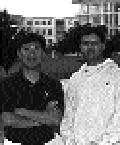

A very important and often overlooked feature of QuickTime is the standardization of
media capture. Since its initial release, QuickTime has defined an API for capturing
different types of media, including video and sound. This API, known as the sequence
grabber, makes it possible to easily add media capture to any application.
Not only are applications that use the sequence grabber able to automatically support
any QuickTime-compatible media capture hardware, but they also perform flawlessly
and efficiently regardless of system configuration. This is not an easy task considering
all the variations in hardware features and system configurations. In fact, we're even
hesitant to say that the sequence grabber "supports video and sound capture" because
the sequence grabber API also insulates the programmer from the actual media type
being captured. The sequence grabber supports any media type, and, with the release of
QuickTime 2.0, users can automatically capture the new music media type in addition
to sound and video.
To demonstrate the proper use of the sequence grabber, we've included on this issue's
CD a simple, but complete, sequence grabber application -- all in about 10K of
compiled C code! If you're looking for a general all-purpose capture application that's
efficient, reliable, and best of all, customizable, look no further. After a brief
introduction to the sequence grabber, we'll discuss the sample code, and then end with
some special considerations for media capture on Macintosh AV models.
WHAT IS THE SEQUENCE GRABBER?
The sequence grabber is actually a component of type 'barg' (read it backwards).
Although the specification for the component is completely defined in Chapter 5
ofInside Macintosh: QuickTime Components , it's very unlikely that you'll ever want to
implement your own 'barg' component. Instead, you'll be using this component
specification as the API definition for the standard sequence grabber.
The sequence grabber component implements the basic functionality of media capture.
For handling specific media-related functions, the sequence grabber calls on various
sequence grabber channel components (as defined in Chapter 6 ofInside Macintosh:
QuickTime Components ); there's one such component for each media type. Before
QuickTime 2.0, the two standard channel components available were the video and
sound sequence grabber channels, enabling the sequence grabber to capture video and
sound media. QuickTime 2.0 includes the new music sequence grabber channel,
allowing real-time capture of music from MIDI instruments.
Sequence grabber panel components (described in Chapter 7 ofInside Macintosh:
QuickTime Components ) manage items in a settings dialog box that allows the sequence
grabber to obtain configuration information from a user. Applications typically don't
use sequence grabber panel components directly; instead, the sequence grabber
automatically uses them for relevant sequence grabber component calls.
USING THE SEQUENCE GRABBER
Using the sequence grabber is as simple as opening the sequence grabber component
and calling SGInitialize (complete error checking can be found in the sample code on
the CD):
theSG = OpenDefaultComponent(SeqGrabComponentType, 0); SGInitialize(theSG);
It's also important to call SGSetGWorld to set the window used for displaying any
visual data.
SGSetGWorld((**myWindowInfo).theSG, (CGrafPtr) myWindow, nil);
Opening the channel components. Now it's a matter of calling SGNewChannel to
open a sequence grabber channel component to access a particular channel media type.
However, rather than hard- coding the media types into the sample application, as in
the call
SGNewChannel(theSG, VideoMediaType, &videoChannel);
it's better to use the Component Manager to search for all the different sequence
grabber channel components and open a connection to each one. This guarantees that the
capture application can automatically support new media types such as the music
media type in QuickTime 2.0.
For example, the following code compiles a list of sequence grabber channel
components:
cd.componentType = SeqGrabChannelType;
cd.componentSubType = 0;
cd.componentManufacturer = 0;
cd.componentFlags = 0;
cd.componentFlagsMask = 0;
aComponent = 0;
for (i=0, done=false; i<kMAXCHANNELS && !done; i++) {
aComp = FindNextComponent(aComp, &cd);
if (aComp != 0) {
// Get the channel name and type.
gSGInfo.channelName[i] = NewHandle(4);
GetComponentInfo(aComp, &theCD,
gSGInfo.channelName[i], nil, nil);
gSGInfo.channelType[i] = theCD.componentSubType;
} else
done = true;
}
This list of component types can then be used to open a connection to each of the media
types with SGNewChannel, or SGNewChannelFromComponent if the channel component
is already open.
Saving and restoring settings. We want the sample application to start up each
time with the same channel settings and video compression settings as when the
application was last used. To implement this, we use a preferences file to store these
settings. The compression settings are restored with two sequence grabber calls:
SGSetVideoCompressorType(
(**myWindowInfo).channel[videoChannel],
gSGInfo.cInfo.compressorType);
SGSetVideoCompressor(
(**myWindowInfo).channel[videoChannel],
gSGInfo.cInfo.depth, nil,
gSGInfo.cInfo.spatialQuality,
gSGInfo.cInfo.temporalQuality,
gSGInfo.cInfo.keyFrameRate);
The channel settings are restored by a simple call to SGSetChannelSettings with the
settings retrieved from the preferences file:
SGSetChannelSettings(theSG, channel[i],
channelSettings[i], 0);
Previewing. We're almost ready to begin previewing. But note that some sequence
grabber channel components require additional calls before they can be used. For
instance, spatial channels such as video require a call to SGSetChannelBounds to set the
channel's display boundary rectangle. So, once the channels are created and the
previous settings are restored as discussed above, we make a call to
SGSetChannelBounds for the video media to set the video capture to encompass the
entire window. We also call SGSetChannelUsage for all sequence grabber channels,
which tells the sequence grabber that we want to preview and record every channel.
To start previewing, we simply call SGStartPreview. However, while we're
previewing, any changes to the system must be handled with care. First, we'll pause
the preview whenever an event that requires updating of the channel information
occurs. For example, if the capture window is dragged, we'll pause the video, move the
window, and then unpause the video. Likewise, if we resize the window, we'll want to
pause the preview, resize the window, and then unpause the preview:
// Pause the sequence grabber before resizing. SGPause((**myWindowInfo).theSG, true);
// Resize and then update the video channel. SizeWindow(theWindow, width, height, false); MyUpdateChannels(theWindow);
// OK. We can restart again. SGPause((**myWindowInfo).theSG, false);
Notice the call to MyUpdateChannels. This is a routine in the sample application that
updates the video bounds and channel usage by calling SGSetChannelBounds and
SGSetChannelUsage.
The user configuration dialog. Another feature that needs to be handled in a
capture application is the user configuration dialog for each of the different capture
medias. This is actually one of the simplest things to deal with because the sequence
grabber component handles everything. It even stores the settings internally. To
retrieve the settings, we can simply call SGGetChannelSettings at a later time. In the
sample application, we get the channel settings before we close the connection to the
sequence grabber. Then we save the settings in the preferences file.
This is all the code necessary to display and handle the user configuration dialog:
SGSettingsDialog(theSG, theChannel, 0, nil, 0, nil, 0);
Recording. The last important part of the sample code is sequence grabber recording.
Before recording can begin, we need to specify an output file with SGSetDataOutput so
that the sequence grabber knows where to save the captured media data:
StandardPutFile("\PName of new movie:", "\pMovie", &reply);
if (!reply.sfGood)
return;
SGSetDataOutput(mySG, &reply.sfFile, seqGrabToDisk);
Then we start recording by simply calling
SGStartRecord(theSG);
We loop and call SGIdle until the mouse button is pressed to stop recording. This is the
most efficient way to record: we don't want to call WaitNextEvent, since that would
give other processes time. Instead, we want to hog the CPU time until the recording
process is done.
while (!Button() && !err) {
err = SGIdle(theSG);
}
We stop recording and start previewing again as follows:
SGStop(mySG); SGStartPreview((**myWindowInfo).theSG);
And, of course, just to be nice, we flush the mouse-down events so that no application
switching takes place after the mouse button is pressed:
FlushEvents(mDownMask, 0);
That's really all there is to the sequence grabber sample application.
SPECIAL CONSIDERATIONS FOR AV MODELS
As mentioned earlier, one of the key features of the sequence grabber is its ability to
work with all hardware and system configurations. This is not an easy task considering
all the different types of video capture boards. For example, there are boards that are
simply frame grabbers, and there are those that support on-board hardware video
compression. To make every configuration work, the sequence grabber has to handle
every case. Here we'll discuss the unique features of the Macintosh AV models and some
steps you can take to improve their capture rate.
The video-in circuitry allows the AV models to display 16-bit color and 8-bit
grayscale. And, although the hardware can't display video-in at 24 bits per pixel, you
can capture video using YUV 4:2:2 compression and achieve an effective 24 bits per
pixel. To capture in YUV, you must use the AV's video digitizer hardware compression
feature, which you can do simply by selecting "Component Video - YUV" from the list
of compressors in the Compression panel of the video settings dialog. You should also
make sure that you haven't checked a "Post Compress Video" or similar checkbox in a
movie-grabbing application. Selecting this checkbox would bypass the hardware
compression, and the sequence grabber would grab the data in raw RGB format.
The AV circuitry can't display video when it's capturing the compressed data. The
sequence grabber realizes that it needs to decompress the data into the capture window
in order to give the visual feedback that's normally expected. This is fine and dandy,
but since there's no hardware decompression in the system, the image decompression
is completed in software. This degrades the capture rate.
Knowing that the decompression during recording is what's hurting the capture rate,
you can easily rectify the problem by turning off preview during recording so that
decompression into the capture window won't take place. To do this, you just call
SGSetChannelUsage for the video channel with the seqGrabPlayDuringRecord flag set to
0. In the sample code, a menu selection allows you to turn off video playthrough during
recording.
The downside of using YUV compression is that playback without hardware
decompression isn't very smooth because of the high data rate and raw processing
power needed to decompress each pixel. After capturing, you should recompress the
movie using a compressor such as Cinepak or Video that provides a better playback
rate.
GO MAKE A MOVIE
The sequence grabber obviously makes the job of media capture simpler. But there are
many other factors that can play a part. Hard drive transfer rate, disk fragmentation,
SCSI bandwith, sound settings, and AppleTalk activity all play an important part in
limiting the maximum capture rate. You can also maximize the capture rate by
rebooting with no AppleTalk connections. You should also experiment with the different
sound sample rates, as these also affect the capture rate.
New additions to the sequence grabber in QuickTime 2.0 also help. Instead of capturing
to a single movie file, it's now possible to specify a different file for each channel. For
example, you can record video to a large and fast external hard drive and record audio
to the internal hard drive. This optimization allows for better allocation of resources
and better efficiency because each channel has higher bandwidth. Using the sample
code, if QuickTime 2.0 is installed, you can select recording to separate files.
There are, of course, other optimizations that can be explored. With a bit of creativity
and testing, you can achieve the optimal capture rates.
JOHN WANG (AppleLink WANG.JY) While writing the sequence grabber sample code
for this column, John watched the movie Top Gun so many times that he can now
duplicate each and every air combat scene with his favorite flight simulator, FA/18
Hornet. John once aspired to become a private pilot, but that idea was quickly quelled
once his significant others found out. As Skate so succinctly put it, "Woof woof wooof?"
Translation: "Who's going to feed me if you kill yourself?"*
FERNANDO ("NANO") URBINA (AppleLink NANO) uses his Macintosh AV to
capture the views of the Rockies from his home office in Colorado Springs. He still
doesn't understand how it can thunder and snow at the same time, but thinks he'll be
able to figure this out once he adjusts to the lack of oxygen. Nano suffers severe
withdrawal from his favorite coffee shop near the Apple campus in Cupertino, but
manages to get a fix about once a month when he returns there. He worked on the
original AV models and is now a member of the second-generation AV team. *
Thanks to Peter Hoddie and Don Johnson for reviewing this column. *